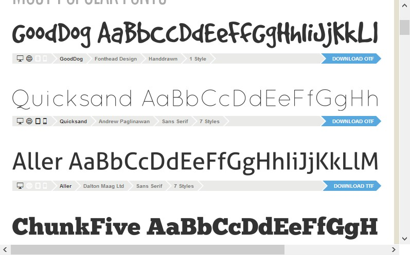

CSS3 – шрифты
Шрифты играют огромную роль в создании общего впечатления о документе.
В зависимости от используемого шрифта, одно и то же содержимое может
восприниматься как строго профессиональное, причудливое, старомодное
или сверхсовременное.
Разработчики браузеров не спешат реализовывать специальные веб-шрифты по
объективным причинам. Прежде всего, это вопросы оптимизации, т.к.
разрешение экранов намного хуже разрешения печатных документов.
Если веб-шрифт не настроить должным образом для отображения на экране
монитора, буквы маленького размера будут сливаться в одну расплывчатую
линию. Кроме этого, в большинстве шрифты платные.
В
CSS3
CSS3 поддержка сложных шрифтов обеспечивается посредством возможности
@font-face
, которая применяется следующим образом:
- Требуемый шрифт (или, более вероятно, несколько версий шрифта для поддержки разных браузеров) загружается на сайт.
- Каждый шрифт регистрируется в таблице стилей с помощью команды @font-face .
- Зарегистрированный шрифт используется в правилах стиля указанием его названия, точно так же, как и обычные веб-шрифты.
- Когда браузер обнаруживает таблицу стилей, в которой используется специальный веб-шрифт, он загружает этот шрифт с сервера в свой кэш для временного хранения страниц и изображений. После этого браузер использует этот шрифт только для данной страницы или сайта. Если этот же шрифт указывается в другой странице, он должен быть зарегистрирован на этой странице и загружен на ее сервер, откуда он может быть загружен браузером в свой кэш.
Форматы веб-шрифтов
Хотя все современные браузеры поддерживают возможность
@font-face
,
не все они поддерживают одинаковые типы файлов шрифтов. Например,
Internet Explorer, который обеспечивает использование
@font-face
в течение многих лет, поддерживает только файлы типа EOT (Embedded OpenType).
Этот формат предоставляет ряд преимуществ, например, в нем используется
сжатие для уменьшения объема файла шрифтов, а также применяется строгое
лицензирование для веб-сайтов, чтобы шрифт нельзя было украсть
с одного сайта и использовать на другом.
Но формат EOT никогда ни пользовался большой популярностью и не используется никакими другими браузерами.
Вместо него браузеры работают с более знакомыми стандартами шрифтов, применяемыми
в компьютерных приложениях — TTF (TrueType) и OTF (OpenType PostScript).
Кроме этого, существуют еще два типа отображения шрифтов — SVG и WOFF.
В таблице ниже дано краткое описание всех этих форматов шрифтов.
TTF (TrueType),
OTF (OpenType PostScript)
Распространенные форматы шрифтов настольных компьютеров
EOT (Embedded OpenType)
Формат, специфичный для продуктов корпорации Microsoft.
Не завоевал популярности у браузеров, за исключением Internet Explorer
SVG (Scalable Vector Graphics)
Универсальный графический формат, который можно использовать
для создания шрифтов. Дает хорошие, но не отличные результаты
— медленно отображается и демонстрирует текст пониженного качества
WOFF (Web Open Font Format)
Возможно, единый формат шрифтов будущего. Поддерживается новыми версиями браузеров
Наборы шрифтов
Взять разные файлы шрифтов, которые могут вам потребоваться легче всего будет загрузить
готовый набор шрифтов из Интернета, получив, таким образом, все требуемые файлы шрифтов.
Недостаток этого подхода состоит в том, что ваш выбор ограничивается тем, что вы сможете
найти в глобальной сети. Чтобы помочь вам в поиске наборов веб-шрифтов, можно
порекомендовать воспользоваться одним из лучших сайтов шрифтов — Font Squirrel.
На рисунке ниже показано несколько шрифтов из предоставляемых на этом сайте наборов:

Сайт Font Squirrel предоставляет для загрузки несколько сотен высококачественных шрифтов,
организованных в разделы по категориям (такие как, например, Calligraphic, Grunge или Retro).
Но самое приятное, что все эти шрифты бесплатные для любого использования, будь то
на персональном компьютере для создания документов или на веб-странице в Интернете.
Набор шрифтов загрузится в виде файла, сжатого в формате ZIP, который содержит несколько
файлов шрифта в разных форматах. Чтобы использовать шрифт в своей веб-странице, файлы
разных форматов шрифта нужно загрузить на веб-сервер в папку этой веб-страницы.
После этого шрифт нужно зарегистрировать, чтобы он был доступным для использования в таблице стилей.
Регистрация выполняется с помощью сложного правила
@font-face
в
начале таблицы стилей, которое выглядит следующим образом
@font-face {
font-family: 'MetrophobicRegular';
src: url('Metrophobic-webfont.eot');
src: local('Metrophobic'),
url('Metrophobic-webfont.eot?#iefix') format('embedded-opentype'),
url('Metrophobic-webfont.woff') format('woff'),
url('Metrophobic-webfont.ttf') format('truetype'),
url('Metrophobic-webfont.svg#MetrophobicRegular') format('svg');
font-weight: normal;
font-style: normal;
}
Строки приведенного кода выполняют следующие функции:
- Выражение @font-face регистрирует шрифт для его дальнейшего применения в таблице стилей.
- Шрифту можно присвоить любое название. Это название будет употреблено позже, при использовании шрифта.
- Первым должен быть указан формат EOT, т.к. дальнейшая часть правила сбивает с толку Internet Explorer, и тот не обращает внимания на остальные форматы. Функция таблицы стилей url() указывает браузеру загрузить файл из обозначенного URL. Если шрифт размещен в одной папке с веб-страницей, то здесь можно просто указать название файла.
- Функция local() указывает браузеру название шрифта, и если этот шрифт установлен на компьютере посетителя веб-страницы, браузер использует локальный шрифт. Но в редких случаях это может вызвать проблемы. Например, в зависимости от того, где установлен шрифт на компьютере посетителя, компьютеры Mac OS X могут вывести предупреждение о нарушении безопасности, или же может загрузиться другой шрифт с таким же названием, как и ваш. По этой причине веб-разработчики иногда указывают явно несуществующее имя файла, чтобы браузер не нашел локального шрифта. В качестве простого имени такого типа можно использовать какой-либо бессмысленный символ.
- Последний шаг — это сообщить браузеру о других файлах шрифтов, которые он может использовать. Если имеется файл шрифта типа WOFF, укажите этот файл первым, т.к. данный формат предоставляет наилучшее качество шрифта. Следующим укажите файл шрифта формата TTF или OTF, а самым последним — файл формата SVG.
Зарегистрировав веб-шрифт с помощью функции
@font-face
, вы можете использовать
его в любой таблице стилей. Для этого используется уже знакомое нам
свойство font-family, которому присваивается значение в виде названия семейства
шрифтов, зарегистрированного с помощью функции
@font-face
(в строке 2).
Далее приведен пример использования этого шрифта в правиле таблицы стилей:
body {
font-family: 'MetrophobicRegular';
}
Шнужно в обязательном порядке зарегистрировать до того, как использовать
его в правиле таблицы стилей. Если выполнить эти шаги в обратном порядке,
шрифт не будет работать должным образом.
Веб-шрифты Google
Еще один источник бесплатных веб-шрифтов —- это служба
Google Web Fonts
.
Ее особенность в том, что пользователю не нужно беспокоиться о форматах
шрифтов, т.к. Google определяет браузер посетителя страницы и автоматически
отправляет файл шрифта нужного формата.
Чтобы использовать шрифт Google в своих страницах, выполните такую последовательность шагов:
- 1. Откройте в браузере страницу Google Web Fonts . Откроется страница, содержащая длинный список имеющихся в наличии шрифтов.
- 2. Выберите способ просмотра шрифтов, перейдя на одну из вкладок вверху страницы — Word (Слово), Sentence (Предложение), Poster или Paragraph (Абзац). Например, если вы ищете шрифт для заголовка, вам, скорее всего, следует выбрать вкладку Word или Sentence, чтобы посмотреть на шрифт в одном слове или предложении соответственно. Но если вам шрифт нужен для текста, то следует выбрать вкладку Paragraph, чтобы просмотреть, как этот шрифт будет выглядеть в большом фрагменте текста. При любой выбранной опции просмотра можно ввести свой текст образца и установить желаемый размер шрифта.
- 3. Настройте опции поиска. Если вы знаете название требуемого вам шрифта, введите его в поле поиска. В противном случае нужно будет просматривать все шрифты, прокручивая страницу вверх, что для латинских шрифтов может занять значительное время. Чтобы ускорить поиск, можно отсортировать и отфильтровать список согласно определенным критериям, например, наиболее популярные жирные шрифты без засечек.
- 4. Обнаружив подходящий шрифт, щелкните по ссылке Pop out. Откроется новое окно, содержащее описание шрифта и все его подробности.
- 5. Если на этом этапе вы решите использовать данный шрифт, щелкните по ссылке Quick-use на исходной странице. Откроется окно, содержащее код, требуемый для использования данного шрифта. Код состоит из ссылки на таблицу стилей, которую нужно вставить в разметку вашей веб-страницы, и примера правила таблицы стилей, применяющего шрифт.
- 6. Если на этом этапе вы решите использовать данный шрифт, щелкните по ссылке Quick-use на исходной странице. Откроется окно, содержащее код, требуемый для использования данного шрифта. Код состоит из ссылки на таблицу стилей, которую нужно вставить в разметку вашей веб-страницы, и примера правила таблицы стилей, применяющего шрифт.
Данная таблица стилей регистрирует шрифт посредством функции
@font-face
,
избавляя вас от необходимости выполнять эту работу самому. Но что
лучше всего, Google предоставляет файлы шрифтов, что, опять же,
избавляет вас от необходимости загружать их на свой веб-сайт.
Используйте шрифт, обращаясь к нему по его названию, в любое время.
Например, далее приводится правило для применения должным образом
зарегистрированного шрифта Ceviche One в заголовках первого уровня,
предоставляющее резервный шрифт на случай, если браузер не сможет
загрузить основной шрифт:
h1 {
font-family: 'Ceviche One', arial, serif;
}